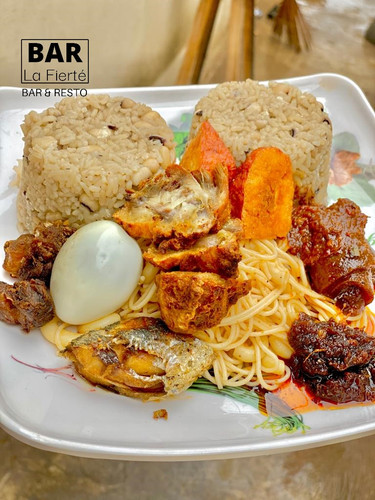
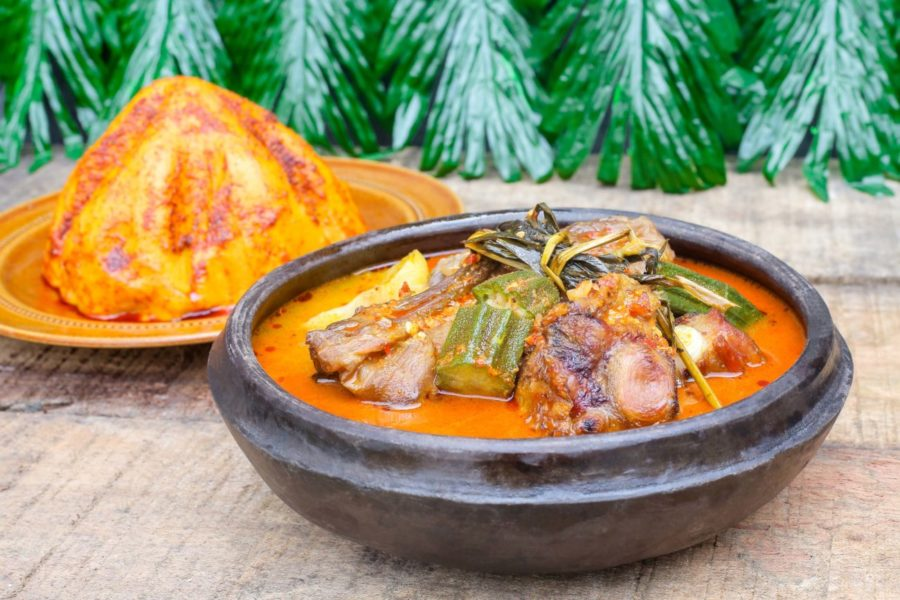
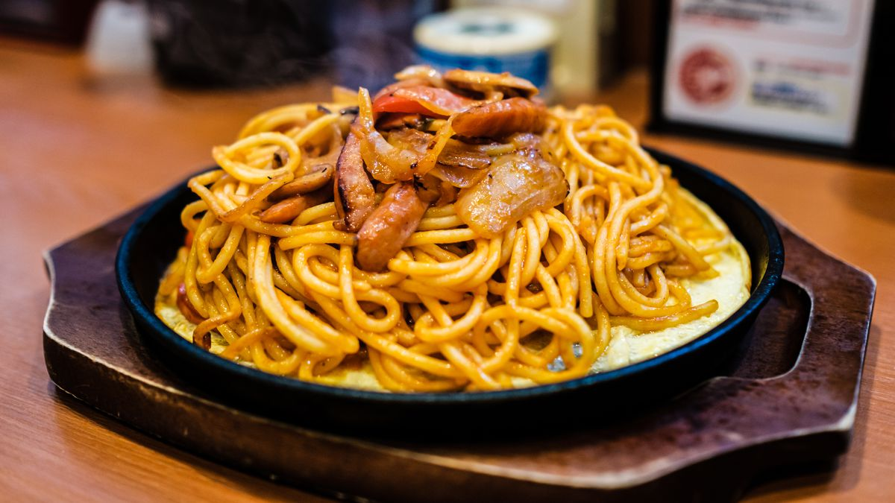
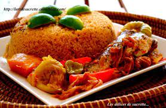
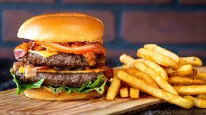
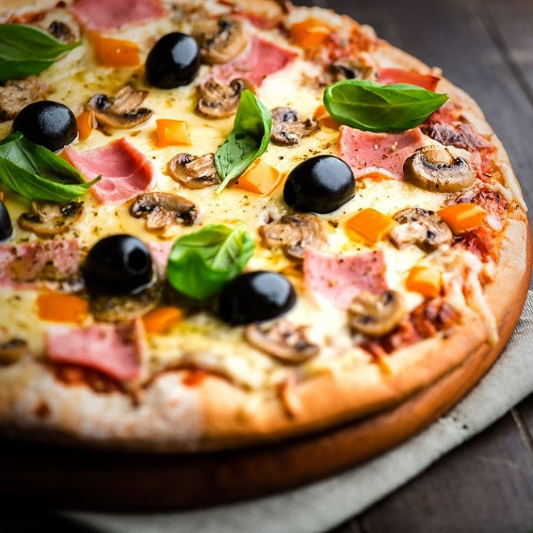
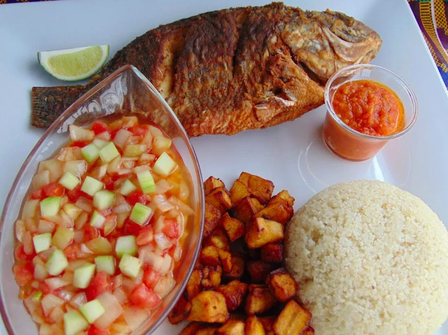

Ingrédients
- Gari
- Poisson frais
- Gingembre
- Ail
- Poivre blanc
- Poivre noir
- Coriandre
- Anis,oignon
- Concentré de tomate
- Tomates Fraiches
Ingrédients
- Riz
- Haricot
- Tomates
- Piment rouge sec
- huile d'assaisonnement
- Fromage et autres accompagnements

Ingrédients
- Viande de chevre/Mouton
- Gingembre
- Ail
- Romarin
- Feuilles de laurier
- Poivre noir
- Oignon
- Tomates fraiches
- Piments frais
- Sel
- Cube

Ingrédients
- 400g de spaghettis
- 4 œufs
- 200g de parmesan râpé
- 200g de lardons
- Sel
- Poivre du moulin

Ingrédients
- Riz
- Poulet
- Concentré de tomate
- Tomates fraiches
- Poivon rouge
- Epices
- Oignons
- Poivrons
- Huile vegetale
- Sel
- Bouillon d'assaisonnement

Ingrédients
- 3 Oeufs durs
- 3 Carottes
- 1 Concombre
- 1/2 Poivron vert
- Maïs doux
- Emiettés de poulet
- Mayonnaise
- Sel
- Poivre noir moulu
Ingrédients
- 180 ml d’eau tiède
- 2 œufs
- 2 c.à.s d’huile d’olive
- 1 c.à.c de sel
- 400g de farine
- 7g levure boulangère sèche
- 1 c.à.c de sucre

Ingrédients
- 250 g Farine
- 20 g Levure de boulanger
- 2 cuil. à soupe Huile
- 2 pincées Sel
- pour la garniture :
- 200 g Jambon
- 150 g Mozzarella(ou de gouda)
- 1 kg Tomates
- 1 Boîte de purée de tomates
- 100 g Champignons de Paris
- 10 Olives noires

Ingrédients
- 0 grammes de filet de boeuf
émincé
- 3 branches de persil haché
- 7 cornichons coupé en dés
- 2 tomates fraîches coupées en
dés
- 1/2 concombre coupé en dé
- oignon rouge coupé en dé
- Epice(paprika, cumin,
coriandre, cardamome,
- gingembre, sel et poivre)
- 3 gousses d'ail
- 3 cuillères à soupe d'huile
d'olive
- 2 yaourts nature
- 2 citrons pressés en jus
- 2 cuillères à soupe de moutarde

-->